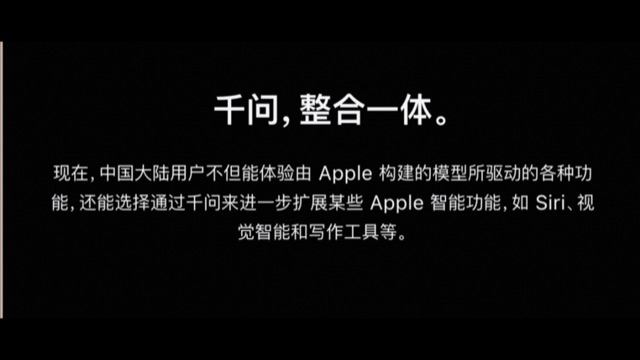
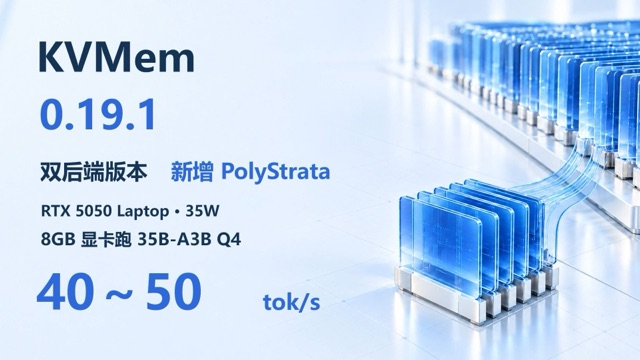

AI 全生命周期情报 · 期刊 · 把 AI 捡起来，学明白
拾光 · AI 视界
2026-11-01（周日） · 第 6 期 · 拾光主笔
封面故事 · 本期主题
AI 烧钱烧到要「担保」了，可同一晚，有人用 6G 显卡跑起了 35B 大模型
一边是 Anthropic 近 9000 亿美元隐性债务要 Nvidia 来担保，一边是开源社区把大模型塞进了几千块的显卡——「烧钱」和「降本」同天上演，这才是 AI 当下的真面目
一晚上出了三条新闻，指向同一个矛盾：Anthropic IPO 招股书披露近 9000 亿美元隐性债务、被评级机构预告要拿「垃圾级」；Nvidia 洽谈为 Anthropic 的数据中心做债务担保；OpenAI 新一轮融资从 300 亿目标缩水到只拿到 110 亿。资本开始算账了。可就在同一批新闻流里，一条开源实测让拾光眼睛一亮：有人在 6G/8G 显存的显卡上跑起了 35B 参数的大模型。这一期，拾光就把「AI 到底是不是非烧钱不可」这件事，掰开讲清楚。
拾光主笔 · 2026-11-01 · 兑现读者反馈（算法降本专题）
先别急着站队「泡沫」或「永动机」。这一晚真正值得你看懂的，是钱的流向在分叉 ：一条流向「更贵的卡、更大的数据中心、更长的烧钱周期」，另一条流向「让手头现有的卡，跑出原来好几倍的活」。前者制造焦虑，后者才是普通人能抓住的东西。
2026-10-30 至 10-31，三条产业新闻相继：①Anthropic IPO 招股文件披露，未来在服务器、建筑、电力上拟投入近 9000 亿美元债务，远超其资产负债表上 1175 亿负债、1120 亿现金的账面数字（彭博社）；②彭博/FT 报道 Anthropic 将被评级机构评「垃圾级」，上市后的信用前景受质疑；③Nvidia 洽谈为 Nscale 在西弗吉尼亚为 Anthropic 建的数据中心担保数十亿美元债务融资，首栋建筑已签 446 亿美元合同。另据报道，OpenAI 新一轮融资原定募资 300 亿美元，现仅获约 110 亿承诺、目标下调。（事件 10-30/31 发生，10-31 报道）
拾光分析：这三条新闻连起来看，就一句话——AI 圈的「军备竞赛」到了要「抵押未来」的阶段 。先讲清楚「垃圾级」意味着什么。 信用评级就像给人打「还钱靠谱度」的分。拿高分，借钱利息低；拿「垃圾级」，说明债主觉得「这钱借出去可能收不回来」，于是要你付更高的利息、甚至不肯借。Anthropic 靠「未来收入」和「继续融资」来还这 9000 亿的账，可它的账本上，收入远盖不住这么大体量的开支——所以评级机构开始犯嘀咕。这跟拾光上一期讲的是一回事：市场从「先相信再验证」，变成了「先对账再看要不要相信」 。但拾光今天真正想给你的是另一面。 同一批新闻流里，藏着一条几乎没人当头条的消息：开源社区有人实测，用 6G/8G 显存 的显卡（几千块的消费级卡）就能跑起 35B 参数 的大模型。这意味着什么？AI 的成本，不是一条只会往上走的直线 。除了「砸钱买更贵的卡」这条腿，还有一条同样硬的腿叫「算法降本」——量化、蒸馏、投机解码、MoE 稀疏化……这些技术让同一个模型，用更少的显存、更少的算力、更少的钱就跑得动。拾光把这条腿叫 「算法腿」 ，把「买卡堆算力」叫 「硬件腿」 。
AI 降本的两条腿：都在变强，但「算法腿」被聊得太少
硬件腿（买更贵的卡、堆更多算力）
大家天天聊的这条：GPU 越堆越多、数据中心越建越大、钱越烧越猛 → 制造焦虑
代价：资本开支飙升（巨头年 7400 亿美元），债务压力上来
算法腿（让手头的卡跑出更多活）
被忽略的这条：量化 / 蒸馏 / 投机解码 / MoE 稀疏，同样效果省下显存与算力
实证：6G/8G 显存跑 35B 大模型，几十倍降本，普通人也能用
真相：AI 不一定非要无限烧钱，「算法腿」每进一步，都在给「泡沫会不会破」这个问题加分。
信息图： AI 降本有两条腿。红的是「硬件腿」（买更贵的卡），蓝的是被严重低估的「算法腿」（量化/蒸馏/投机解码/MoE 稀疏，让现有卡跑出好几倍的活）。同一天，红腿在上头条（9000 亿债务），蓝腿在角落悄悄发生（6G 显卡跑 35B 模型）。
「算法腿」到底能省多少？这里有条最清醒的实话。 拾光不吹「零成本跑大模型」，因为每个降本手段都有代价——省显存，往往要牺牲一点精度、多一点延迟、或牺牲一点通用性 。量化把模型的「小数点」压粗（省内存），代价是答案可能没那么细腻；蒸馏让小模型「模仿」大模型（跑得快），代价是小模型没那么「懂全科」；投机解码（上期讲过）靠「先猜再验」提速，代价是多了一点工程复杂度。看清楚这三者的「省」和「代价」，你就不会被任何「某某技术让成本腰斩」的标题带跑。 这正是拾光想让你带走的核心认知：AI 降本不是「免费的午餐」，而是一场「用什么代价换什么收益」的记账 ——能把这本账算清楚的人，才不会在「泡沫」和「永动机」两个极端之间来回荡。
L3·模型训练 / L4·工程工具 / L5·硬件算力（算法降本 vs 硬件堆料）
阿里巴巴千问要进 Apple 智能了：11 月 4 日开始测试，12 月随 iOS 27.3 上线
2026-10-31，阿里巴巴与 Apple 宣布合作，把千问（Qwen）集成进 Apple 智能（Apple Intelligence）。中国区的 iPhone 用户将能在 Siri、写作工具、视觉智能里直接调用千问的文本理解、图像理解与内容生成能力。功能 11 月 4 日起随 iOS 开发者 Beta 开放测试，12 月 iOS 27.3 正式版推出时上线；用户可自主选择是否开通，且请求与回复不用于模型训练。（出处 千问官方公众号 · 2026-10-31）
拾光分析：这条新闻对国内 iPhone 用户来说，是等了好久的一个「终于」。先讲清楚背景 ：Apple 智能（Apple Intelligence）是苹果自家的 AI 能力，但出于合规和语言适配，它在国内一直「缺一块本地化的聪明大脑」。这次苹果选了阿里巴巴的千问 来做这块大脑——相当于 iPhone 的 AI 里，装进了一个国产大模型的「心脏」 。为什么值得你注意？ 三个点。第一，「国产大模型」第一次站到了全球顶流硬件的 AI 入口上 ——以前大家觉得国产模型是「追赶者」，这次它成了苹果在中国区的「合作者」，这本身就是中国 AI 产业一个标志性的脚印。第二，「不用于训练」这句话很关键 ——苹果一向把隐私当卖点，这次明确说你的请求不会喂给模型训练，是在安抚对隐私敏感的国内用户，也划了一条「数据怎么用」的底线。第三，落点很实 ——Siri 变聪明、写作工具能帮你写、看图的「视觉智能」能看懂画面，这些不是 PPT，是 12 月就能按到的功能。清醒提醒 ：别把「合作」误读成「苹果放弃了自研」或「国产模型全面超越」。苹果在全球其他市场仍在推自己的方案，这次是「中国区用一个本地化最强的伙伴」的务实选择。但不可否认，「能被苹果选中」，本身就是对千问工程能力的一次实打实的背书 。（这个视频解说见下方「本期视频」区）
L6·应用落地 / L7·产业生态（国产大模型 + 硬件入口）
出处：千问公众号（阿里）· 2026-10-31 ·
千问官宣原文
九个 AI 开发者平台一个月里接连「出事」：最老套的招，打穿了最火热的生态
2026-10-30，云安全公司 Wiz 发布报告《AI 开发者平台的黑色十月》，梳理 10 月内至少九个 AI 开发者平台披露的安全事件，包括 Fireworks AI、Lightning AI、Railway、Warp、OpenCode 等，多起报告指向凭据窃取、「Agent 群攻（agent swarm）」攻击，以及以「蒸馏」为目的的数据窃取。（出处 Wiz · 2026-10-30）
拾光分析：这条新闻和上一条「千问进苹果」放在一起，正好构成 AI 圈当下的正反两面 ：一边是使劲往前冲、把 AI 塞进所有人的手机；一边是 AI 开发者平台正在被当成「肥肉」盯上。先搞懂「黑色十月」里那几个词。 「凭据窃取」就是偷你的账号密码（API 密钥），拿到就能冒充你调用别人的算力、盗你的数据。「Agent 群攻」更值得说：现在 AI 智能体（Agent）能自己上网办事，攻击者就派一群「假 Agent」像蜂群一样去打一个目标 ——以前要人手一个个试，现在 AI 能自动、批量、24 小时地试。「以蒸馏为目的的窃取」最狠：偷你的数据、你的模型输出，回来「蒸馏」一个山寨版的你 ，等于把你的本事白嫖走。为什么这条值得所有「已经在用 AI 工具」的人记住？ 因为它点破一个反直觉的事实：AI 越火，「攻击 AI」就越是一门赚钱的生意 。攻击者不看热闹，他们看的是「哪里有值钱的数据、有算力、有漏洞」。开发者平台正堆满这三样，于是就成了靶子。拾光给你的不是恐慌，是一条朴素的判断：下一个被攻击的，未必是没上新闻的小平台，而可能是你正用来干活的某个「AI 工具」 。所以那条老规矩比任何时候都重要——只在官方来源装东西、别把密钥往不明网站贴、定期换密钥。
L6·应用落地 / L7·产业生态（AI 安全）
「假 Claude Code 扩展」混进 Cursor 市场：5000 人差点亲手把后门请进门
2026-10-30/31，Anthropic 确认：有人利用 Cursor 插件市场的权限，发布了一个「被篡改」的 Claude Code VS Code 扩展（Anthropic 并未构建或发布它），可尝试远程访问、窃取数据，最多影响约 5000 用户，同一供应链攻击还波及数千台设备的恶意 Claude 扩展；该后门扩展上架了约 12 小时被下架。（出处 Cursor / Ars Technica / Wired · 2026-10-30）
拾光分析：这是「黑色十月」里最典型的一例，值得单独拆给你看，因为它的套路老得不能再老，却精准打中了 AI 时代的新命门 。套路就三步 ：① 挑一个最火的插件名（「Claude Code」够火、够多人装）；② 塞进恶意代码；③ 上架到官方市场，等急着用的开发者自己来装。这叫「供应链攻击」 ——你不是被黑客直接黑了，而是你亲手把一个「伪装成官方」的坏东西请进了门 。它比直接攻击更可怕，因为它是「合法的入口 + 假的身份」的组合，人很难靠肉眼分辨。为什么 AI 时代它更危险？ 两个原因。第一，AI 开发者的工作流高度依赖插件市场 （Cursor、VS Code、各种 Agent 工具），这些市场现在是「半开放的货架」，上架审核跟不上爆炸式增长；第二，装了后，你的代码、密钥、项目文件全在它的眼皮底下 ，等于把家门钥匙给了小偷。拾光送你三条能立刻用的自保口诀：① 装任何插件前核对官方发布者 （开发者名、下载量、评分对不对得上）；② 只从官方市场/官方仓库装 ，不点来路不明的「一键安装」链接；③ 对要求更多权限的插件多问一句「它凭什么要读我这么多文件」 。
L6·应用落地 / L7·产业生态（供应链安全）
「递归自我改进」这个大词，这几天有了第一条「可验证的进展」
拾光在第 4、5 期反复拿「递归自我改进」当例子，教读者「别把融资故事当既成事实」。这几天，Anthropic IPO 招股书把它列为核心战略，市场却反过来用「9000 亿债务」和「垃圾级评级」给它泼了盆冷水——一个声称要「自我改进出超级智能」的公司，账本上却先被打了「还钱不靠谱」的分。（出处 彭博社 / FT · 2026-10-30）
拾光分析：这就是「技术进展跟踪」这个新栏目的第一课——看一个大词，别停在「它多厉害」，要追「它兑现到了哪一步」 。拾光在第 5 期给过一张「五条可证伪信号清单」，我们拿这五条过一遍「递归自我改进」的现状：能力可测可复现？ ——目前还没有公认的第三方评测证明「新一代稳定更强」，更多是招股书里的愿景表述；改进跨代累加？ ——未见公开证据；成本逐渐下降？ ——恰恰相反，这一期头条讲的 9000 亿债务说明，它现在还在「越烧越贵」的阶段；失败被诚实报告？ ——公开报喜多、报忧少；第三方可验证？ ——尚缺独立复验。结论很清醒 ：五条里，目前条数上「兑现」的还很少，说明「递归自我改进」这个方向依然是「押注未来」，不是「已成事实」 。但这不等于否定它——技术跟踪的意义，是让你每一次看到它上头条时，都能心里有数：它现在到底走到清单的哪一条了 。这就是「跟踪」的价值，也是拾光给你承诺的、能长期用下去的方法。
「技术进展跟踪」怎么看一个大词（往期回看栏目 · 长期复用）：把它放进这张五条清单里过一遍，每次上头条就更新一次它的「进度条」。① 能力可测可复现？② 改进跨代累加？③ 成本在下降还是越烧越贵？④ 失败会不会被诚实报告？⑤ 有第三方独立复验吗？——五条里兑现越少，越要把它当「故事」而非「事实」。
L2·算法模型 / L7·产业生态（技术进展跟踪）
出处：第 4/5 期拾光分析 + 彭博社 · 2026-10-30 ·
往期回顾
七条速览 · 均近 48 小时
Figma 发布 Weave 创作平台 ：用「节点化工作流」把图像/视频的生成与编辑连成可复用流程，可打包成 Weave tool 让团队一键运行，社区工具发布已上线（出处 10-31 ）Meta 搭伙傅利叶做人形机器人 ：据 The Information，Meta 三个月内与国内傅利叶（Fourier）造出人形机器人原型，正做第二台，但 Meta 称暂无售卖计划（出处 10-31 ）Google DeepMind 用卫星+AI 做全球森林地图 ：借卫星数据与 AI 生成全球森林地图，服务生态监测与碳核算（出处 10-31 ）Anthropic 阻止 Claude 逆向/复刻游戏 ：用户反馈 Claude 被新增规则禁止重制视频游戏，Anthropic 确认是为规避版权风险（出处 10-31 ）PsiQuantum 发布 8×8 硅光光路开关 ：把量子光子学积累的硅光平台用于 AI 数据中心网络，光互连再进一步（出处 10-31 ）Agent Sandbox 成「新算力形态」 ：InfoQ 报道每天上千万次沙箱创建，Agent 执行环境正在成为与推理、训练并列的新算力消耗点，腾讯云×英特尔共推 Agentic AI 执行底座（出处 10-31 ）OpenAI 计划用 Daybreak Blue 安全会话数据训练 ：11 月 29 日起，即便用户关闭训练，也会用其会话数据训练，遭反弹后补了一个单独退出选项（出处 10-31 ）

视频 国行iPhone AI短板补齐：苹果官宣阿里千问接入Apple智能 · 上传 2026-10-31

视频 6/8G显卡畅跑35B大模型！KVMem × PolyStrata，Qwen 35B MoE 实测 · 上传 2026-10-31
视频 大摩科技闭门会：AI、软件和教育行业最新观点 · 上传 2026-10-30
拾光词典 #006 · MoE 稀疏化（Mixture of Experts） —— 把一个大模型拆成很多个「专家」，每次问题只唤醒其中少数几个相关的专家来算，而不是让整个模型全部开工。通俗说 ：一家医院有 100 个科室，但你挂了心内科的号，就只有心内科医生来给你看病，其他科室该休息休息——省人、省电、还看得快。为什么重要 ：它是「算法腿」里最能打的降本手段之一，能让千亿参数的大模型，用更少的显存和算力跑起来（本期视频里 6G/8G 显卡跑 35B 模型就是它发力的样子），是理解「AI 为什么能越做越大、却不用等比例地越烧越贵」的关键。
本期拾光金句：AI 圈最热闹的那条新闻，往往在讲「烧了多少钱」；而真正藏得住未来的那条，常常在讲「省下了多少钱」。热闹是门票，学会看「省钱」的路子，才是目的。
寒洛 · 投资视角接力 ：看懂「是什么」之后，想听「怎么判断」？本期拾光讲清了「AI 烧钱 vs 算法降本」的技术成色与「存储/算力」的产业逻辑，寒洛将从投资视角接力解读这些产业动向对市场判断的启发。入口链接待寒洛提供后回填（
上期投资版接力暂链 ）——拾光只管科普，不下投资结论。
意见 · 建议 · 需求
你有想看的 AI 话题、想弄懂的概念、或对本期内容有不同看法？
本期兑现了读者哪些反馈
算法降本专题（#18/#21） ：头条《AI 不一定非要无限烧钱》讲透「硬件腿 vs 算法腿」，拆解量化/蒸馏/投机解码/MoE 各自的「省」与「代价」。技术进展跟踪（#22） ：新栏目「往期回看」首条，用五条可证伪信号清单追「递归自我改进」的最新兑现情况。存储缺关键数字（#16） ：本期产业视角带入「巨头年 7400 亿美元资本开支」「6G/8G 显存跑 35B」等量化数字（完整存储产业链量化专期见第 7 期）。投资版链接回填（#24） ：寒洛接力卡片已挂上期投资版链接（发布即定稿，第 5 期不回改）。